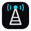

Pilihan nama & logo (ronde 3)
Arbiter
Wasit/hakim: timbangan yang memutuskan trade lolos atau ditolak sebelum Anda tanda tangan. Indigo + emas, kesan berwibawa.
Quill
Pena bulu: Anda yang menulis dan menandatangani setiap tiket, agen hanya menyiapkan. Teal + oranye, kesan hangat.

Pylon
Menara sinyal: menangkap data pasar live dan memancarkan peringatan. Hitam + cyan, kesan teknologi/crypto.
Vigil
Berjaga: mata yang selalu mengawasi, dengan centang di pupil. Gradasi magenta–oranye, kesan berani dan mudah diingat.